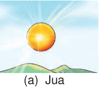
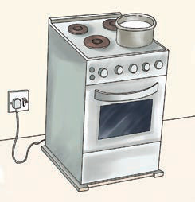
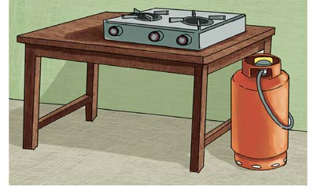

likiwemo jua na radi. Pia, joto hutokana na vyanzo visivyo vya asili kama vile moto wa kuni, mkaa, makaa ya mawe, umeme, mafuta, msuguano na gesi. Vyanzo hivi vya joto hutumika kuzalisha joto kwa matumizi mbalimbali ya kila siku. Chunguza Kielelezo namba 1, kisha soma maelezo yanayofuata.

Picha aa. Jua lenye mwanga mkali linaonekana angani juu ya vilima, likitoa miale ya mwanga na joto. Jua ni chanzo cha asili cha nishati ya joto.
Picha be. Sufuria imewekwa juu ya mawe matatu, huku kuni zilizo chini yake zikiwaka. Mvuke unatoka kwenye sufuria, kuonesha kuwa moto wa kuni unatoa joto la kupikia.
(b) Jiko la kuni
 Picha che. Sufuria yenye chakula imewekwa juu ya jiko la mkaa. Mkaa unaowaka ndani ya jiko unatoa joto na miali inayopasha sufuria.
Picha che. Sufuria yenye chakula imewekwa juu ya jiko la mkaa. Mkaa unaowaka ndani ya jiko unatoa joto na miali inayopasha sufuria.(c) Jiko la mkaa

Picha dee. Jiko la umeme lenye sehemu nne za kupikia limeunganishwa kwenye soketi ya ukutani. Sufuria iko juu ya sehemu moja ya jiko, na umeme hubadilishwa kuwa joto la kupikia.(d) Jiko la umeme

Picha ee. Jiko la gesi lenye sehemu mbili za kupikia limewekwa juu ya meza. Bomba la jiko limeunganishwa na mtungi wa gesi ulio pembeni, na gesi hutumika kutoa joto la kupikia.(e) Jiko la gesi
Kielelezo namba 1: namna joto linavyosafiri.
Vyanzo vya nishati ya joto
Kielelezo namba 1(a) kinaonesha jua ambalo ni chanzo kikuu asili cha nishati ya joto. Vielelezo namba 1(b) na 1(c) vinaonesha vitendo vya kupika chakula kwa kutumia kuni na mkaa. Vielelezo namba 1(d) na 1(e) vinaonesha vitendo vya kupika chakula kwa kutumia umeme na gesi.
Kazi ya kufanya namba 1
Kubaini chanzo cha joto
Mahitaji: Kijiti kimoja kikavu, kipande cha mti kilichokauka na programu fikivu.
Hatua
1. Fikicha viganja vya mikono yako.